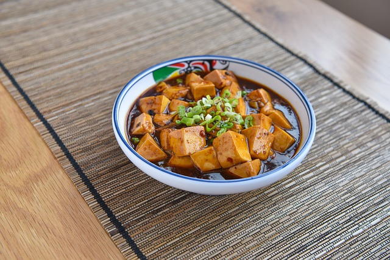

Home
Mapo Tofu Recipe

Description
When you're short on time and you're in need of something nutritious, then this quick vegan mapo tofu will certainly satisfy your taste buds.
This is an authentic Sichuan-style mapo tofu, which is both spicy and aromatic.
Ingredients
- ½ cup vegetable broth
- 2 teaspoons soy sauce
- 1 teaspoon cornstarch
- 1 tablespoon chile oil
- 1 tablespoon peanut oil
- 3 tablespoons fermented black beans
- 1 tablespoon sesame oil
- 2 green onions
- 6 cloves garlic, minced
- 1 tablespoon fresh ginger, minced
- 1 teaspoon Sichuan peppercorns
- 2 tablespoons chili bean paste (doubanjiang)
- 1 (397 grams) container silken tofu, cut into 1-inch cubes
Steps
- Mix vegetable broth, soy sauce, and cornstarch in a bowl.
- Heat peanut oil in a wok over medium-high heat. Add black beans, green onions, garlic, ginger, and Sichuan peppercorns. Saute until aromatic, about 1 minute. Add chili bean paste and the soy sauce mixture. Cook and stir until thick, 3 to 5 minutes. Add tofu; cook until heated through, about 1 minute more.
- Transfer cooked tofu to a serving dish; drizzle chile oil and sesame oil on top.